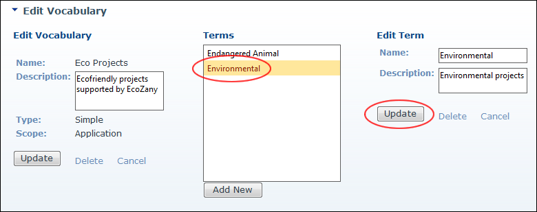

Editing Terms
How to edit one or more term associated with either a simple or hierarchical vocabulary using the Taxonomy Manager module.
- Navigate to Admin > Advanced Settings >
 Taxonomy - OR - Go to a Taxonomy Manager module.
Taxonomy - OR - Go to a Taxonomy Manager module.
- Click the Edit link beside the vocabulary which the term is associated with. This opens the Edit Vocabulary page.
- In the Terms list, select the term to be edited. This displays the Edit Term section.
- In the Edit Term section, edit one or more fields:
- In the Name text box, edit the name of this term.
- In the Description text box, edit the description of this term.
- At Parent Term, select the parent term for this term. Note: This option is only displayed on Hierarchical Vocabularies.
- Click the Update button.
- Repeat Steps 3-5 to edit additional terms.
- Click the Cancel button to return to the module.

Editing Vocabulary Terms